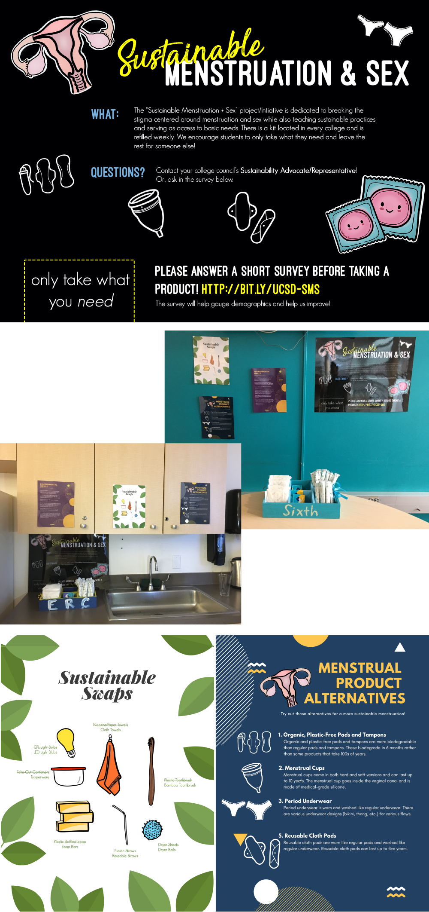

The “Sustainable Menstruation + Sex Kits” is a project dedicated to breaking the stigma centered around menstruation and sex while also teaching sustainable practices and serving as an access to basic needs. I founded this project during my second year at university after combining my two passions: women’s rights and sustainability.
The project received abundant praise by students and faculty, enabling the project to remain a permanent resource on-campus. I also won recognition as “Council Member of the Year” for this initiative.

Each kit contains biodegradable pads and tampons along with sustainable condoms. In addition, there were hand drawn informational guides educating users of alternatives and the environmental impact of the products. To fund my initiative, I applied and received The Green Initiative Fund (TGIF) grant for $2,700 from the Sustainability Resource Center.
The project focuses on 3 main aspects… (1) education to students, (2) acting as a basic needs safety net, and (3) opening the conversation about traditionally taboo topics. I lead a group of 6 sustainability representatives throughout my time. In the course of 6 months, over 3,000 products were made available to students.
